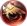
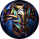
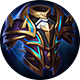
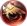

Chama do Dragão
Chama do Dragão
 Raios
Raios
 Sacrifício
Sacrifício
 Fênix
 Gelo
Gelo
 Bênção
Bênção
Este é um site feito por fã em homenagem ao Champions Legion!


 



Chama do Dragão
Raios
Sacrifício
 Fênix
Gelo
Bênção
Cléo não tem muita mobilidade para viabilizar invades na jungle ou proxy. No entanto, seu dano consistente o permite farmar a jungle aliada do top e alguns bichos da jungle inimiga, sem entrar muito. Farme para conseguir vantagem de ouro sobre seu adversário e force uma luta que você tenha condições de vencer.
Acertar a primeira skill é crucial para causar um bom dano, uma vez que reduz a armadura do alvo.
Nas teamfights, tente acertar sua ultimate no maior número de inimigos possível e fique usando hits básicos para causar ainda mais controle em alvos chave.
Avance com a segunda skill, use a ultimate, acerte a primeira e persista dando hits básicos.
Ordem de compra dos itens: Inicie com a faca de caça( ), compre o capacete de patrulheiro(
), compre o capacete de patrulheiro( ). Compre as botas fortes e feche o capacete de unicórnio após a arma de umbra. Pode comprar os demais itens na ordem. O capacete pode ser substituído pela capa do profeta, se houver necessidade. Vale ressaltar que itens de defesa devem ser comprados mediante a necessidade. Compre itens que sirvam para tankar o dano mais forte do time inimigo.
). Compre as botas fortes e feche o capacete de unicórnio após a arma de umbra. Pode comprar os demais itens na ordem. O capacete pode ser substituído pela capa do profeta, se houver necessidade. Vale ressaltar que itens de defesa devem ser comprados mediante a necessidade. Compre itens que sirvam para tankar o dano mais forte do time inimigo.
Ordem de upgrade das habilidades: 3ª → 1ª → 2ª.